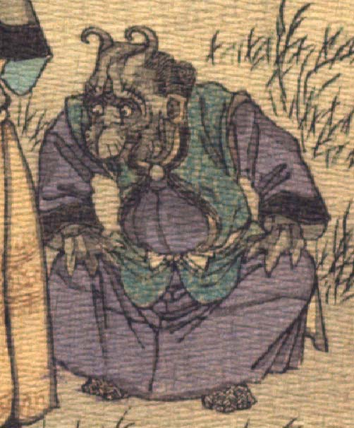

浅黒い肌の鬼。頭頂は禿げ、曲がった角が2本生えている。額に皺が寄り、目玉は丸く、鼻の下が膨らんでいる。耳は尖っており、顔つきは獣を思わせる。紫色の衣服を着て、膝を開いて、両手を膝に置き、しゃがんでいる。手指は太く3本である。
著作者：J.Dautremer／出典：親書誌：U426_nichibunken_0123：Le vieillard et les démons／日付：2006／資源識別子：U426_nichibunken_0123_0005_0002
Copyright (c)2010- International Research Center for Japanese Studies, Kyoto, Japan. All rights reserved.